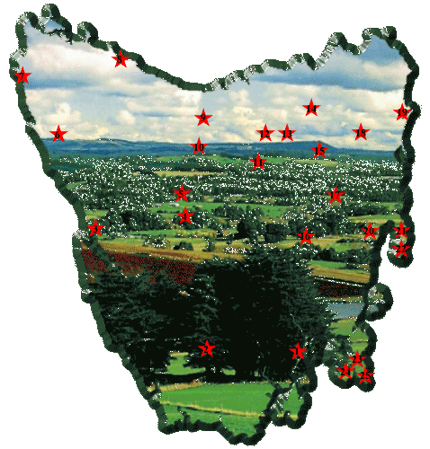

 |
1. Hobart 2. Lake Pedder 3. McQuarie Harbour, Strahan 4. Lake St Clair 5. Cradle Mountain and Dove Lake 6. Arthur Pieman Region 7. Lighthouse - West Coast 8. Wynyard 9. Mt Roland, Sheffield 10. Xanadu, Kubla Khan, Mole Creek 11. Liffey Falls, S.W. of Launceston 12. Kings Bridge, near Launceston 13. Quadrant Mall, Launceston 14. St Matthias Church, Windermere 15. Evandale 16. Callington Flour Mills, Oatlands 17. Township of Ross 18. Meander Falls, N.E. Tasmania 19. Bay of Fires, St Helens 20. Spiky Bridge, near Swansea 21. The Hazards, Freycinet Nat. Park 22. Wineglass Bay, Freycinet Nat. Park 23. Asylum at Port Arthur 24. Ruins at Port Arthur 25. Port Arthur Penal Colony |